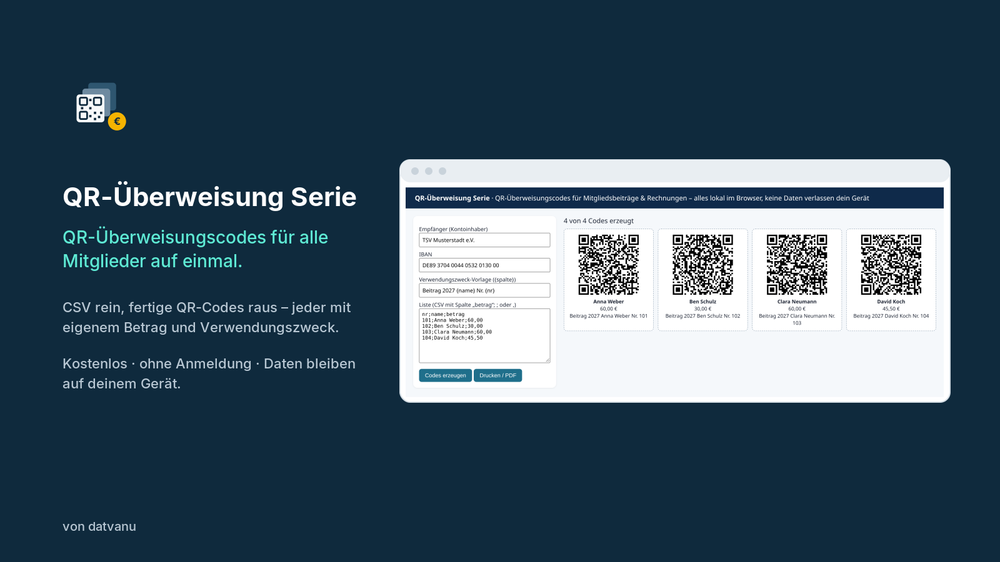
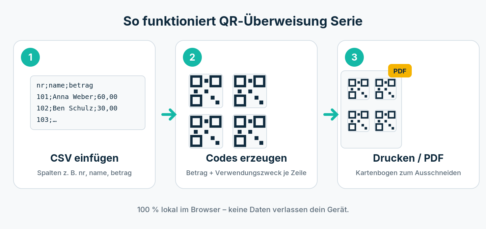

datvanu · QR-Überweisung Serie · QR-Überweisungscodes für Mitgliedsbeiträge & Rechnungen – alles lokal im Browser, keine Daten verlassen dein Gerät
QR-Codes für Überweisungen in Serie erstellen – für Vereine, Kitas und Hausverwaltungen
Mit QR-Überweisung Serie erzeugst du aus einer einfachen Tabelle (CSV) für jede Person einen eigenen EPC-QR-Code für die Überweisung mit individuellem Betrag und Verwendungszweck. Die Empfänger scannen den Code mit ihrer Banking-App – IBAN, Betrag und Zweck sind sofort richtig ausgefüllt. Keine Tippfehler, weniger Nachfragen, schnellerer Zahlungseingang.

So funktioniert's

Empfänger und IBAN eintragen (die IBAN wird per Prüfsumme kontrolliert).
Liste einfügen, z. B. aus Excel exportiert: Spalten wie nr;name;betrag.
Verwendungszweck-Vorlage festlegen, z. B. Beitrag 2027 {name} Nr. {nr}.
„Codes erzeugen“ und als Kartenbogen drucken oder als PDF speichern.
Sicher und datensparsam
Alle Daten bleiben in deinem Browser. Es gibt keinen Upload, kein Konto und keine Speicherung auf einem Server.
Häufige Fragen
Was ist ein EPC-QR-Code?
Ein standardisierter QR-Code (EPC069-12) für SEPA-Überweisungen, den nahezu alle deutschen Banking-Apps lesen können.
Wie lang darf der Verwendungszweck sein?
Maximal 140 Zeichen – das Tool warnt, wenn eine Zeile zu lang ist.
Kostet das etwas?
Nein, das Werkzeug ist kostenlos und ohne Anmeldung nutzbar.
In English
QR-Überweisung Serie (“QR bank transfer series”) turns a CSV list into one EPC QR code (EPC069-12, SEPA credit transfer) per row, each with its own amount and payment reference. Payers scan the code with their banking app and IBAN, amount and reference are filled in.
Empfänger = recipient (account holder), IBAN = recipient IBAN (checked with its checksum).
Verwendungszweck-Vorlage = reference template; {column} is replaced by that column of each row (max. 140 characters).
Liste = CSV with a header row and a column betrag (amount), separated by ; or ,.
Codes erzeugen creates the codes, Drucken / PDF prints them or saves a PDF.